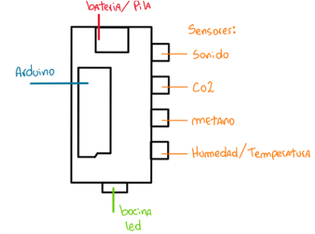

SafeKitchen Monitor
Descubre SafeKitchen Monitor, la solución definitiva para mantener la seguridad y eficiencia en tu cocina industrial. Nuestro avanzado sistema mide y monitorea en tiempo real variables críticas como temperatura, humedad, gas metano, gas ambiente y luz. Con SafeKitchen Monitor, protege tu entorno de trabajo, asegura la calidad de los alimentos y garantiza un ambiente seguro para tu equipo. ¡Optimiza tu cocina con la tecnología más avanzada y confiable del mercado!